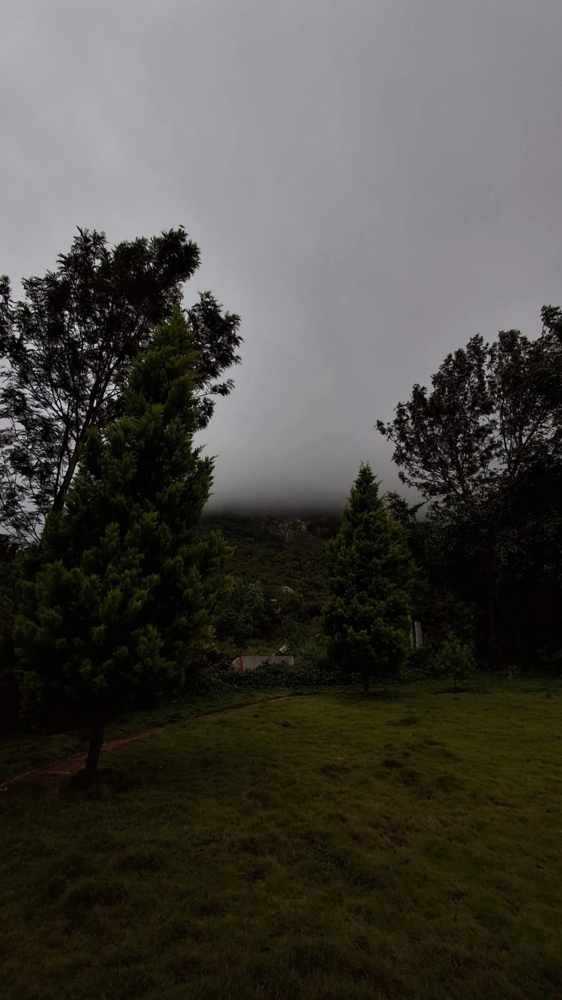

Aditi Yk
Light, mountains, tea — and the quiet moments in between.
Photographs
About me

I'm a photographer, which mostly means I'm someone who pays attention.
A patch of light on a path, a bird on the thinnest branch, the moon turning up behind a rooftop. These are the things I tend to stop for, usually when I'm meant to be going somewhere else.
I'm happiest in the mountains, with a camera in one hand and, if I'm lucky, a cup of tea in the other. Tea slows me down the way I think good photographs need: you can't hurry the kettle, and you can't hurry the light.
I don't photograph to make things look like more than they are. I photograph to remember how a place felt — the quiet, the weather, the hour. This is where those moments live.
Recent updates
Loading…
Contact me
The easiest way to find me is on Instagram, where I share what I'm seeing day to day.
@ekcupmasalachaiii